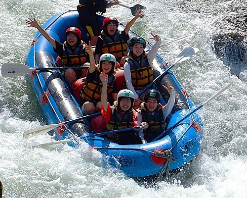
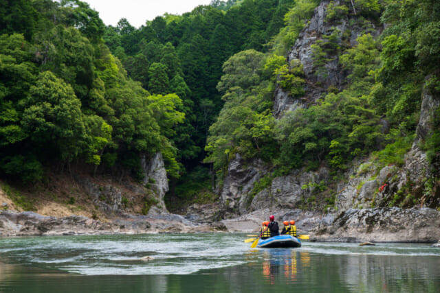

Adventure + Cultural Warmth
At Canoe Do It, white‑water rafting isn’t just a thrill ride — it’s a celebration of the adventurous spirit shared between Hawaiʻi and Japan. Our guides welcome you with the same warmth as a local ʻohana, then lead you into rushing currents that echo the energy of a lively matsuri. Every twist of the river brings a new burst of excitement, and every calm stretch offers a moment to breathe in the beauty of the islands.
Whether you’re shouting “Cheehoo!” or “Yatta!” as you crash through the rapids, the experience blends two cultures that love nature, challenge, and joyful connection. It’s the perfect adventure for families, friends, and anyone ready to paddle together and make memories that last long after the water settles.

Scenic + Story‑Driven
Canoe Do It invites you to ride the river the way island voyagers once navigated the ocean — with courage, teamwork, and a deep respect for the natural world. Our white‑water rafting journey flows through lush valleys and crystal‑clear currents, creating a setting that feels both Hawaiian in its landscape and Japanese in its sense of harmony. The river becomes your guide, shifting from peaceful glides to heart‑pounding drops that spark pure exhilaration.
As you paddle, you’ll feel the blend of aloha and gaman — the Hawaiian spirit of connection and the Japanese spirit of perseverance — carrying your crew forward. It’s more than an outdoor activity; it’s a shared story written in spray, sunlight, and laughter, perfect for visitors from Hawaiʻi, Japan, and everywhere in between.